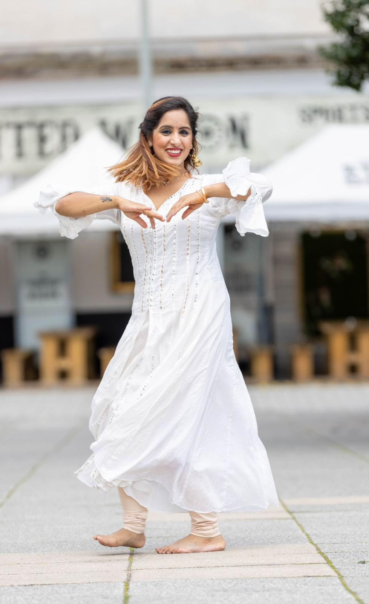

01
Artist.
Rooted in tradition.
Driven by expression.


Our founder Ritika Arora is an award-winning dancer, choreographer and educator whose journey has taken her from classical training in India to the world’s biggest stages, classrooms and cultural platforms across the UK and beyond.

For Ritika, dance has never been simply about learning steps.
Rooted in Indian classical traditions and shaped by years of exploration across Bollywood, folk, fusion and contemporary movement, dance became a way to connect people, culture and expression.
From teaching children and emerging dancers to choreographing large-scale productions and representing Indian culture on international stages, Ritika has become a well-known name in the dance community.
Along the way, one belief remained constant: movement has the power to change how we see ourselves.
Rooted in tradition.
Driven by expression.
Nurturing talent.
Building confidence.
Inspiring growth.
Creating inclusive spaces.
Your first class is free.
Come exactly as you are.